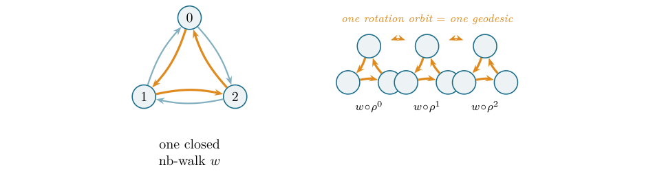

What a Determinant’s Derivative Knows: Jacobi’s Formula and Newton’s Identity for Matrix Traces in Lean 4
At a glance
What the paper contributes
A machine-checked formalization, in Lean 4 / Mathlib, of Jacobi's formula and Newton's identity for matrix traces, composed with Bass's formula. The mathematics is classical; the contribution is the formalization.
- Jacobi's formula in its algebraic form, (det M)′ = tr(adj M · M′) for a matrix of polynomials over a commutative ring (Theorem 1), for which the paper found no prior proof in any proof assistant. Axioms:
propext,Classical.choice,Quot.sound. - Newton's identity for matrix traces to all orders, eigenvalue-free: (charpolyRev M)′ = −charpolyRev M · Σk tr(Mk+1) Xk (Theorem 2), through the resolvent series (I − XM)−1 = Σk MkXk over formal power series (Lemma 1).
- Matrix powers count walks, also for directed graphs (Lemma 2), with the trace rewritten over cyclic walks and its weight invariant under rotation.
- Composed with Bass's formula: the generating function of the non-backtracking counts Nk = tr(Bk) from the adjacency data (A, D) (Theorem 3), and tr(Bk) counts rooted closed non-backtracking walks (Theorem 4).
- The boundary, as the paper states it: rooted walks, not geodesic classes; the prime-geodesic Euler product is mapped, not built.
🚀 Start here: Theorem 1: Jacobi's formula: (det M)′ = tr(adj M · M′) for a matrix of polynomials.
Main results:
- Theorem 1: Jacobi's formula: (det M)′ = tr(adj M · M′) for a matrix of polynomials
- Theorem 2: Newton's identity for matrix traces: (charpolyRev M)′ = −charpolyRev M · Σ tr(Mᵏ⁺¹)Xᵏ
- Theorem 3: the Ihara Nₖ identity: Σ tr(Bᵏ⁺¹)Xᵏ from the adjacency data (A, D)
🗺️ Map of the results (click a box to go to it)
Dependencies in the written proof: an arrow A → B means that this proof of B uses A. Every result rests on its written proof; the tags record what was checked besides, and each statement's “Evidence & scope” block says how far. The colour of a box is its strongest tag, in the order above; the tags in the box give the rest. Boxes with a thick border are the main results; click a box to read the statement.
📐 Setting (copied from the paper, §2)
For a matrix \(M\) whose entries are polynomials in a formal variable, write \(M'\) for the entrywise derivative and \(\det M\) for the determinant (a polynomial). \(\operatorname {adj}M\) is the adjugate (the transpose of the cofactor matrix) (§1). (§4) Write \(\operatorname {charpolyRev}M\) for the reversed characteristic polynomial \(\det (I-XM)\)—a polynomial with constant term \(1\), hence a unit in the power-series ring. (§6) Let \(B\) be Hashimoto’s operator, \(A\) the adjacency and \(D\) the degree matrix; Bass’s formula reads \((1-X^2)^{|V|}\det (I-XB)=(1-X^2)^{|E|}\det (I-XA+X^2(D-I))\).
What this blueprint shows.
The numbered statements of the paper, with their proofs, dependencies and what checked them, under the sections that hold them (with the paper’s numbers), and the figures and tables they use. The full text is in the PDF of the paper.
2 Jacobi’s formula
For an \(n\times n\) matrix \(M\) of polynomials over a commutative ring,
The statement is sorry-free (Matrix.derivative_det); #print axioms reports only propext, Classical.choice, Quot.sound.
Lean · oursshow
✅ Checked when this page was built: Jacobi.lean compiles with Lean 4.35.0, no errors, no sorry. Axioms — derivative_det: propext, Classical.choice, Quot.sound.
Reproduce: Lean 4.35.0, Mathlib f0b4c8150aa0; in that Lean project, lake env lean Jacobi.lean (SHA-256 of the compiled file: 6ec866e48406ee3e…; a source page on this site may show it with comments edited, under its own hash).
Trust base: 🔒 kernel only. Lean: 1 result, standard axioms only
Proof: in this note·Formalized: Lean 4, by the author (public formalizations repository)·Covers: the whole statement·Cite: Theorem 1, p. 3, doi:10.5281/zenodo.20578470
🆕 Classical and new: classical; the paper claims the first machine-checked proof it is aware of of the algebraic formula (N1), after searching Mathlib, the AFP, Coq/Rocq, HOL Light and Mizar; Mathlib had only the analytic derivative of det.
↳ Used in: Theorem 2, Theorem 3
Formalized in Lean (see the linked declarations).
🛡️ Evidence & scope
Program: Jacobi on one 3×3 matrix of polynomials, exact (SymPy). verify_jacobi_newton.py
3 The resolvent series: an eigenvalue-free engine
For an \(n\times n\) matrix \(M\) over a commutative ring, the resolvent series is the matrix of formal power series \(\bigl(\, \sum _k M^k X^k\, \bigr)\), written resolventSeries M.
Lean · oursshow
✅ Checked when this page was built: Jacobi.lean compiles with Lean 4.35.0, no errors, no sorry. Axioms — resolventSeries: propext, Classical.choice, Quot.sound.
Reproduce: Lean 4.35.0, Mathlib f0b4c8150aa0; in that Lean project, lake env lean Jacobi.lean (SHA-256 of the compiled file: 6ec866e48406ee3e…; a source page on this site may show it with comments edited, under its own hash).
Trust base: 🔒 kernel only. Lean: 1 result, standard axioms only
Cite: Definition 1, p. 3, doi:10.5281/zenodo.20578470
↳ Used in: Lemma 1
Formalized in Lean (see the linked declarations).
Both are sorry-free (one_sub_smul_mul_resolventSeries, trace_resolventSeries). The inverse identity is proved from the fixed-point equation \(R=I+XM\! \cdot \! R\) by a single rearrangement—no eigenvalues, no algebraic closure, over any commutative ring.
✅ Checked when this page was built: Jacobi.lean compiles with Lean 4.35.0, no errors, no sorry. Axioms — one_sub_X_smul_mul_resolventSeries, trace_resolventSeries: propext, Classical.choice, Quot.sound.
Reproduce: Lean 4.35.0, Mathlib f0b4c8150aa0; in that Lean project, lake env lean Jacobi.lean (SHA-256 of the compiled file: 6ec866e48406ee3e…; a source page on this site may show it with comments edited, under its own hash).
Trust base: 🔒 kernel only. Lean: 2 results, standard axioms only
Proof: in this note·Formalized: Lean 4, by the author (public formalizations repository)·Covers: the whole statement·Cite: Lemma 1, p. 3, doi:10.5281/zenodo.20578470
🆕 Classical and new: the paper counts the resolvent series among the pieces not in the library (N3).
↳ Used in: Theorem 2
Formalized in Lean (see the linked declarations).
4 Newton’s identity for matrix traces
For an \(n\times n\) matrix \(M\) over a commutative ring, in the ring of formal power series,
Equivalently \(\sum _{k\ge 1}{\operatorname {tr}}(M^k)X^k=-X\, (\operatorname{charpolyRev}M)'/\operatorname{charpolyRev}M\), the logarithmic derivative. The statement is sorry-free (Matrix.charpolyRev_logDeriv), over any commutative ring, eigenvalue-free. At the linear coefficient it specializes to the lemma Mathlib already had, \({\operatorname {tr}}M=-\, [\, X^1\, ]\, \operatorname{charpolyRev}M\).
✅ Checked when this page was built: Jacobi.lean compiles with Lean 4.35.0, no errors, no sorry. Axioms — coe_derivative_charpolyRev_eq_neg_mul_mk_trace_pow, derivative_coe_charpolyRev: propext, Classical.choice, Quot.sound.
Reproduce: Lean 4.35.0, Mathlib f0b4c8150aa0; in that Lean project, lake env lean Jacobi.lean (SHA-256 of the compiled file: 6ec866e48406ee3e…; a source page on this site may show it with comments edited, under its own hash).
Trust base: 🔒 kernel only. Lean: 2 results, standard axioms only
Proof: in this note·Formalized: Lean 4, by the author (public formalizations repository)·Covers: the whole statement·Cite: Theorem 2, p. 4, doi:10.5281/zenodo.20578470
🆕 Classical and new: classical; the matrix-trace form, which Mathlib had only at the linear coefficient (N2).
↳ Used in: Theorem 3
Formalized in Lean (see the linked declarations).
🛡️ Evidence & scope
Program: the identity modulo X⁸ for one 3×3 and one 2×2 integer matrix, exact (SymPy). verify_jacobi_newton.py
5 Matrix powers count walks
For a matrix \(M\) over a commutative semiring, the \((i,j)\) entry of \(M^k\) is the sum, over length-\(k\) vertex walks from \(i\) to \(j\), of the product of the edge weights (pow_apply_eq_sum). For the \(0\)–\(1\) adjacency matrix of a decidable relation—a finite directed graph—this is a genuine count: \(\bigl((\text{adjacency})^k\bigr)_{ij}\) is the number of length-\(k\) directed walks from \(i\) to \(j\) (relMatrix_pow_apply). Both are sorry-free.
✅ Checked when this page was built: WalkCount.lean compiles with Lean 4.35.0, no errors, no sorry. Axioms — pow_apply_eq_sum, relMatrix_pow_apply, trace_pow_eq_sum_cyclicProd, cyclicProd_comp_finRotate, cyclicProd_comp_finRotate_iterate: propext, Classical.choice, Quot.sound.
Reproduce: Lean 4.35.0, Mathlib f0b4c8150aa0; in that Lean project, lake env lean WalkCount.lean (SHA-256 of the compiled file: 7b1bf7dcaf36423e…; a source page on this site may show it with comments edited, under its own hash).
Trust base: 🔒 kernel only. Lean: 5 results, standard axioms only
Proof: in this note·Formalized: Lean 4, by the author (public formalizations repository)·Covers: the whole statement·Cite: Lemma 2, p. 5, doi:10.5281/zenodo.20578470
🆕 Classical and new: the directed-graph walk count is among the pieces not in the library (N3).
↳ Used in: Theorem 4
Formalized in Lean (see the linked declarations).
🖼️ Figure 2

Closed non-backtracking walks, and the rotation that groups them. Left: the triangle \(K_3\) has six darts; one closed non-backtracking walk of length \(3\) is shown in amber (the reverse darts, in grey, would backtrack). Right: rotating the basepoint by the cyclic shift \(\rho =\mathtt{finRotate}\) permutes the three rooted walks of this orbit while leaving the cyclic weight fixed (cyclicProd_comp_finRotate)—so a single geodesic accounts for an orbit of rooted walks. Here \({\operatorname {tr}}(B^3)=6\): two orbits (the cycle and its reverse), three basepoints each.
6 The Ihara counts, composed
With \(Q=\det (I-XA+X^2(D-I))\), in the power-series ring,
The two \((1-X^2)\)-powers and both determinants are units, so the division is the formal \(\mathtt{invOfUnit}\); the identity is sorry-free (ihara_Nk_explicit). It expresses the non-backtracking counts \(N_k={\operatorname {tr}}(B^k)\) purely through the adjacency data \((A,D)\).
Lean · oursshow
✅ Checked when this page was built: TraceFormula.lean compiles with Lean 4.35.0, no errors, no sorry. Axioms — ihara_Nk_explicit: propext, Classical.choice, Quot.sound.
Reproduce: Lean 4.35.0, Mathlib f0b4c8150aa0; in that Lean project, lake env lean TraceFormula.lean (SHA-256 of the compiled file: 2a7348dcd68d3e94…; a source page on this site may show it with comments edited, under its own hash).
Trust base: 🔒 kernel only. Lean: 1 result, standard axioms only
Proof: in this note·Formalized: Lean 4, by the author (public formalizations repository)·Covers: the whole statement·Cite: Theorem 3, p. 5, doi:10.5281/zenodo.20578470
🆕 Classical and new: composition of Jacobi and Newton with the author’s Bass formalization; Bass’s theorem is classical.
↳ Not used by another result of the paper.
Formalized in Lean (see the linked declarations).
🛡️ Evidence & scope
Program: Bass’s identity on K₃, exact (SymPy). verify_jacobi_newton.py
sorry-free (trace_hashimoto_pow).
Lean · oursshow
✅ Checked when this page was built: NbWalkCount.lean compiles with Lean 4.35.0, no errors, no sorry. Axioms — trace_hashimoto_pow: propext, Classical.choice, Quot.sound.
Reproduce: Lean 4.35.0, Mathlib f0b4c8150aa0; in that Lean project, lake env lean NbWalkCount.lean (SHA-256 of the compiled file: 234ce32e57f69492…; a source page on this site may show it with comments edited, under its own hash).
Trust base: 🔒 kernel only. Lean: 1 result, standard axioms only
Proof: in this note·Formalized: Lean 4, by the author (public formalizations repository)·Covers: the whole statement·Cite: Theorem 4, p. 6, doi:10.5281/zenodo.20578470
↳ Not used by another result of the paper.
Formalized in Lean (see the linked declarations).
🛡️ Evidence & scope
Program: tr(Bᵏ) against a brute-force count of rooted closed non-backtracking walks on K₃, k = 1..6: 0, 0, 6, 0, 0, 6. verify_jacobi_newton.py
|
Lean name |
Statement |
§ |
|
Matrix.derivative_det |
\((\det M)'={\operatorname {tr}}({\operatorname {adj}}M\cdot M')\) (Jacobi) |
2 |
|
one_sub_smul_mul_resolventSeries |
\((I-XM)\sum _k M^kX^k=I\) |
3 |
|
trace_resolventSeries |
\({\operatorname {tr}}\sum _k M^kX^k=\sum _k{\operatorname {tr}}(M^k)X^k\) |
3 |
|
Matrix.charpolyRev_logDeriv |
\((\operatorname{charpolyRev}M)'=-\operatorname{charpolyRev}M\sum _k{\operatorname {tr}}(M^{k+1})X^k\) (Newton) |
4 |
|
pow_apply_eq_sum |
\((M^k)_{ij}=\sum _{\text{walks}}\prod (\text{weights})\) |
5 |
|
relMatrix_pow_apply |
directed walk count, \(0\)–\(1\) case |
5 |
|
trace_pow_eq_sum_cyclicProd |
\({\operatorname {tr}}(M^{m+1})=\sum _{\text{cyclic }w}\text{cyclicProd}\) |
5 |
|
cyclicProd_comp_finRotate_iterate |
rotation invariance (full group) |
5 |
|
ihara_Nk_explicit |
\(\sum _k{\operatorname {tr}}(B^{k+1})X^k\) from \((A,D)\) |
6 |
|
trace_hashimoto_pow |
\({\operatorname {tr}}(B^k)=\# \) closed nb-walks |
6 |
Colour: blue shade = the number’s size within its column.
|
Identity |
Instance |
Result |
|
Jacobi \((\det M)'={\operatorname {tr}}({\operatorname {adj}}M\, M')\) |
\(3\times 3\) matrix of polynomials |
exact |
|
Newton (log-derivative) |
\(3\times 3\) and \(2\times 2\), mod \(X^8\) |
exact |
|
\({\operatorname {tr}}(B^k)=\# \{ \text{rooted nb-walks}\} \) |
\(K_3\), \(k=1,\dots ,6\) |
\(0,0,6,0,0,6\) both |
|
Bass \((1{-}u^2)^{|V|}\det (I{-}uB)=\dots \) |
\(K_3\) |
exact |
📊 Tables
Every table of the paper, in its order: click one to unfold it, with where the paper cites it, how its numbers were checked, and its data as CSV. The typeset table is one click away, on its page of the PDF.
Table 1. Every machine-checked ingredient. All are sorry-free; #print axioms reports
only [propext, Classical.choice, Quot.sound]. Sources: Ihara/TraceFormula.lean and
MathlibPR/MatrixWalkCount.lean.
| whiteLean name | whiteStatement | white§ |
Matrix.derivative_det | $(\det M)'={\operatorname{tr}}({\operatorname{adj}} M\cdot M')$ (Jacobi) | 2 |
one_sub_smul_mul_resolventSeries | $(I-XM)\sum_k M^kX^k=I$ | 3 |
trace_resolventSeries | ${\operatorname{tr}}\sum_k M^kX^k=\sum_k{\operatorname{tr}}(M^k)X^k$ | 3 |
Matrix.charpolyRev_logDeriv | $(\operatorname{charpolyRev} M)'=-\operatorname{charpolyRev} M\sum_k{\operatorname{tr}}(M^{k+1})X^k$ (Newton) | 4 |
pow_apply_eq_sum | $(M^k)_{ij}=\sum_{\text{walks}}\prod(\text{weights})$ | 5 |
relMatrix_pow_apply | directed walk count, $0$–$1$ case | 5 |
trace_pow_eq_sum_cyclicProd | ${\operatorname{tr}}(M^{m+1})=\sum_{\text{cyclic }w}\text{cyclicProd}$ | 5 |
cyclicProd_comp_finRotate_iterate | rotation invariance (full group) | 5 |
ihara_Nk_explicit | $\sum_k{\operatorname{tr}}(B^{k+1})X^k$ from $(A,D)$ | 6 |
trace_hashimoto_pow | ${\operatorname{tr}}(B^k)=\#$ closed nb-walks | 6 |
Colour: blue shade = the number’s size within its column.
Table 2. Independent numerical cross-checks (SymPy), exact symbolic equality. The graph row
is the triangle $K_3$: the trace of $B^k$ matches a brute-force enumeration of rooted closed
non-backtracking walks, $0,0,6,0,0,6$ for $k=1,\dots,6$ (the cycle and its reverse, three basepoints
each).
| whiteIdentity | whiteInstance | whiteResult |
| Jacobi $(\det M)'={\operatorname{tr}}({\operatorname{adj}} M\,M')$ | $3\times3$ matrix of polynomials | exact |
| Newton (log-derivative) | $3\times3$ and $2\times2$, mod $X^8$ | exact |
| ${\operatorname{tr}}(B^k)=\#\{\text{rooted nb-walks}\}$ | $K_3$, $k=1,\dots,6$ | $0,0,6,0,0,6$ both |
| Bass $(1{-}u^2)^{|V|}\det(I{-}uB)=\dots$ | $K_3$ | exact |
References
- 1
H. Bass, The Ihara–Selberg zeta function of a tree lattice, Internat. J. Math. 3 (1992), 717–797. 🔎 find it
- 2
A. E. Brouwer and W. H. Haemers, Spectra of Graphs, Universitext, Springer, 2012. 🔎 find it
- 3
S. Hoory, N. Linial, and A. Wigderson, Expander graphs and their applications, Bull. Amer. Math. Soc. 43 (2006), 439–561. 🔎 find it
- 4
R. A. Horn and C. R. Johnson, Matrix Analysis, 2nd ed., Cambridge University Press, 2013. 🔎 find it
- 5
S.-H. Hou, Classroom note: a simple proof of the Leverrier–Faddeev characteristic polynomial algorithm, SIAM Rev. 40 (1998), 706–709. 🔎 find it
- 6
K. Hashimoto, Zeta functions of finite graphs and representations of \(p\)-adic groups, in Automorphic forms and geometry of arithmetic varieties, Adv. Stud. Pure Math. 15 (1989), 211–280. 🔎 find it
- 7
Y. Ihara, On discrete subgroups of the two by two projective linear group over \(\mathfrak {p}\)-adic fields, J. Math. Soc. Japan 18 (1966), 219–235. 🔎 find it
- 8
B. Karrer, M. E. J. Newman, and L. Zdeborová, Percolation on sparse networks, Phys. Rev. Lett. 113 (2014), 208702. 🔎 find it
- 9
F. Krzakala, C. Moore, E. Mossel, J. Neeman, A. Sly, L. Zdeborová, and P. Zhang, Spectral redemption in clustering sparse networks, Proc. Natl. Acad. Sci. USA 110 (2013), 20935–20940. 🔎 find it
- 10
L. de Moura and S. Ullrich, The Lean 4 theorem prover and programming language, in Automated Deduction—CADE 28, LNCS 12699, Springer, 2021, 625–635. 🔎 find it
- 11
A. Lubotzky, R. Phillips, and P. Sarnak, Ramanujan graphs, Combinatorica 8 (1988), 261–277. 🔎 find it
- 12
I. G. Macdonald, Symmetric Functions and Hall Polynomials, 2nd ed., Oxford University Press, 1995. 🔎 find it
- 13
J. R. Magnus and H. Neudecker, Matrix Differential Calculus with Applications in Statistics and Econometrics, 3rd ed., Wiley, 2019. 🔎 find it
- 14
The mathlib Community, The Lean mathematical library, in Proc. 9th ACM SIGPLAN Int. Conf. on Certified Programs and Proofs (CPP 2020), 367–381. 🔎 find it
- 15
C. Marín, Random Signs into Matchings: a machine-checked Godsil–Gutman identity in Lean 4 (2026). 🔎 find it
- 16
C. Marín, Unfolding a Graph into a Tree: Heilmann–Lieb real-rootedness in Lean 4 (2026). 🔎 find it
- 17
C. Marín, Folding Edges into Vertices: a machine-checked proof of Bass’s determinant formula for the Ihara zeta in Lean 4 (2026), Zenodo DOI 10.5281/zenodo.20573120. 🔎 find it
- 18
A. Terras, Zeta Functions of Graphs: A Stroll through the Garden, Cambridge Studies in Advanced Mathematics 128, Cambridge Univ. Press, 2011. 🔎 find it